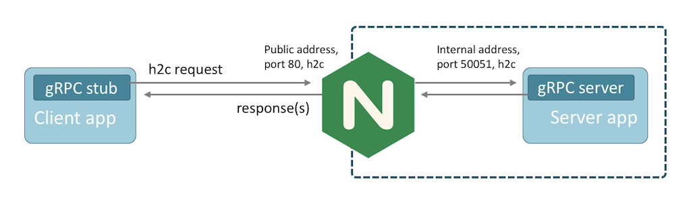

Nginx 代理gRPC—为 Skywalking 提供负载均衡
Apache Skywalking 是一款优秀的分布式链路追踪系统以及 APM 系统，但在社区的实现中，并没有着重考虑客户端负载的问题。因为社区已经有很多对 gRPC 的代理的成熟方案（Skywalking 中 Agent 探针与后端主要通过 gRPC 方式通信）。
因此，为了实现 Skywalking OAP 负载均衡，需要自己做一层反向代理。
2018年3月17日，NGINIX 官方宣布在 nginx 1.13.10中将会支持 gRPC，这一宣告表示了 NGINX 已完成对 gRPC 的原生支持。众所周知，gRPC 已经是新一代微服务的事实标准RPC框架。对于实现来说，可以用服务框架等手段来做到负载均衡，但业界其实还没有非常成熟的针对gRPC的反向代理软件。 NGINIX 作为老牌负载均衡软件对 gRPC 进行了支持，之前已经可以代理 gRPC 的 TCP 连接，新版本之后，还可以终止、检查和跟踪 gRPC 的方法调用：
- 发布 gRPC 服务，然后使用 NGINX 应用 HTTP/2 TLS 加密、速率限制、基于 IP 的访问控制列表和日志记录；
- 通过单个端点发布多个 gRPC 服务，使用 NGINX 检查并跟踪每个内部服务的调用；
- 使用 Round Robin, Least Connections 或其他方法在集群分配调用，对 gRPC 服务集群进行负载均衡；
使用 NGINX 代理 gRPC 服务

在客户端和服务器应用程序之间插入 NGINX，为服务器应用程序提供了一个稳定可靠的网关。
使用 Docker 容器搭建 NGINX Server
使用 Nginx 官方提供的docker image搭建server：
$ docker pull nginx:1.13.10
1.13.10: Pulling from library/nginx
2a72cbf407d6: Pull complete
fefa2faca81f: Pull complete
080aeede8114: Pull complete
Digest: sha256:c4ee0ecb376636258447e1d8effb56c09c75fe7acf756bf7c13efadf38aa0aca
Status: Downloaded newer image for nginx:1.13.10
Nginx gRPC 配置
Nginx 使用 HTTP 服务器监听 gRPC 流量，并使用 grpc_pass 指令代理流量。 为 Nginx 创建以下代理配置，在端口 80 上侦听未加密的 gRPC 流量并将请求转发到端口31320上的服务器：
grpc_proxy.conf文件:
upstream grpcservers {
server 10.15.160.1:31320; # Skywalking OAP 后端 11800 地址
}
server {
listen 80 http2;
location / {
grpc_pass grpc://grpcservers;
error_page 502 = /error502grpc;
}
location = /error502grpc {
internal;
default_type application/grpc;
add_header grpc-status 14;
add_header grpc-message "unavailable";
return 204;
}
}
启动 Nginx 容器
docker run --name mynginx4grpc -p 80:80 -v tmp4myworkspace:/etc/nginx/conf.d:ro -d nginx:1.17
其中，上述 Nginx 配置文件位于 tmp4myworkspace 目录下。